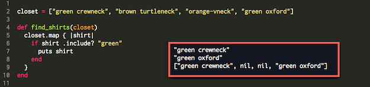

Enumerable#map
October 12, 2015 -- Mapping it all out
Overview
If you recall from last week, arrays and hashes both exist to store other objects and help us keep track of things. An array is like a filing system that indexes everything in it with a unique number while hashes put everything into related pairs that you can call up on demand.
So let's say you've built an array or a hash, how would you look at what's inside? Well that's where methods come in. There are many different methods to process arrays and hashes and today, we'll be looking at one of these. It's a good one.
The map method
Map is small word, but it's a very powerful method. It's powerful because you can write little programs to tell #map exactly what you're looking for or what to do with the information that it finds. These little programs are called a code blocks and they're basically written along the lines of "show me the green shirts", "all members of group 3 please", or even "I'd like to add a $100 bonus to the balance of every developer."
Let's give it a shot. We'll invoke #map with the name of the object we wish to inspect, then a dot followed by the word #map and your small program (code block) surrounded by curly braces:

Breaking it down, we only care about lines 5-9. The first two lines are the array named "closet" and its contents. The next line of code and the very last line are just there to make it easy for us to call this search whenever we need it. So Lines 5-7 are where all the action is.
First on line 5, we invoke #map, then we have a curly brace and inside the vertical lines, we tell #map what we're looking through. Next on line 6 we identify what we're searching for (green shirts), and finally on line 7 we tell #map what it should do each time it finds one. In this case it just prints them all out. That's about it, you have successfully "called #map on closet."
Map returns a new array
Actually there's one more thing, and it's important. You should also know that behind the scenes, #map has created a new array (a comma separated list) with the results of each element it inspected. You can see this array in the results above.
In order to find your green shirts among the others, #map had to look them over one by one. That's called iterating over a data structure. While it was doing that, #map was also making another list in which each position contains either the name of a green shirt or nil (the value we get when your conditions aren't met). The creation of this new list is a key feature of the #map method.